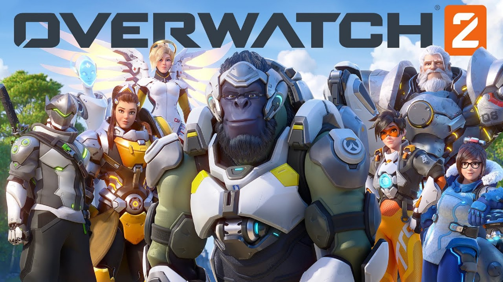

Overwatch tendra una secuela,pero Blizzard ya nos adelanta que al FPS original le queda para rato. De hecho, ambos títulos convivirán en el tiempo como si fueran uno y, lo que es mejor, la comunidad de jugadores no quedará dividida: los modos PvP serán compartidos entre ambos juegos. Lo cual no quita que haya muchos y buenos motivos para esperar la anunciada como nueva era del aclamado FPS.
